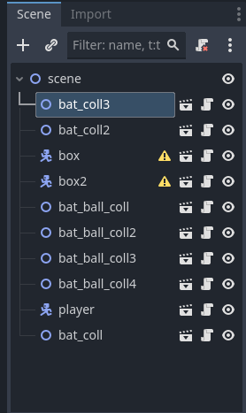

About the Godot Project
Godot Engine was designed from the ground up to offer an efficient node-based framework for game creators[cite: 1]. It features a lightweight footprints and dedicated tools optimized specifically for 2D pixel-art and vector games. Because it is completely open-source, developers retain full ownership of their games without paying royalty fees[cite: 1]. Its scripting interface closely mirrors Python, allowing rapid prototyping of gameplay mechanics[cite: 1].
- 2007: Initial internal engine development began.
- 2014: Godot source code was released to the public under the MIT license.
- 2018: Godot 3.0 launched with major renderer improvements.
- 2023: Godot 4.0 was released, introducing upgraded 2D physics and rendering pipelines.
- It runs natively on Windows, macOS, and Linux platforms.
- The entire executable is less than 100 MB in size.
- GDScript utilizes dynamic typing for fast development iterations.
- Games can be exported directly to WebAssembly for browser play.

"Godot is designed to be fully modular and community-driven at its core[cite: 1]."
Source: Godot Documentation
Visit the Official Godot Engine Website for official downloads[cite: 1].